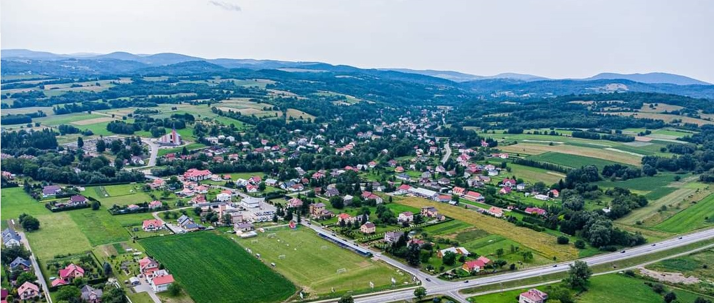
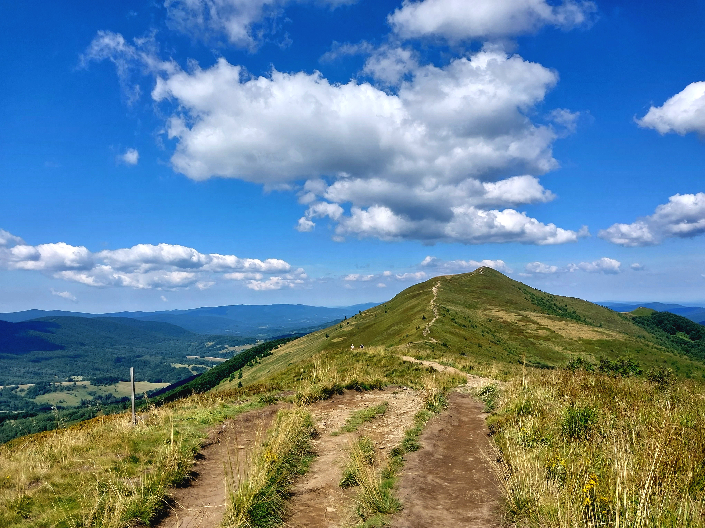

Pawel Knap's Biography
I was born in Krosno, Poland, in October 2000, but I grew up in the nearby village of Rogi in the Beskid Mountains, whose beauty is depicted in the image below. In 2020, I graduated from the Electrical and General Education (ZSEiO) High School in Krosno, achieving outstanding grades and great final exam results. During my time there, I achieved notable success in the National Olympiads of Electric and Electronics Knowledge, earning a laureate position (5th in 2019) and double finalist status (2nd in 2020 and 12th in 2019).
I have spent the whole final year of high school working at KPU University in Krosno on Dr. Boguslaw Wisniewski's electric car project. Following graduation, I commenced an integrated master's degree in Electronics with AI at the University of Southampton, UK. This period was marked by academic successes, including excellent marks, and extracurricular duties such as serving as the secretary of the university AI society.
My bachelor's dissertation, focusing on utilizing Multi-Agent Deep Reinforcement Learning algorithms for controlling energy storage in the Smart Grid, received excellent reviews and was presented at the MLinPL 2023 Conference. Additionally, I made productive use of each summer break, working at Clas-SiC in 2021 and 2022, and at OculAI in 2021. During my last summer vacation, I collaborated with Dr. Hansung Kim on a project of a Real-Time Omnidirectional 3D Multi-Person Human Pose Estimation system. This experience was a fulfilment of my dreams as I want to pursue a PhD in Computer Vision, and this project propelled me in that direction, not only by providing valuable research experience but also resulting in my first published peer-reviewed paper, presented at CVMP 2023 and ICEIC 2024 Conferences.
Currently, I am working on my master's dissertation about Human Pose Estimation and actively seeking a PhD position in Human Body and Actions Modeling.
Beyond academics and work, I have a variety of interests. I spend my free time actively practising callisthenics, running, swimming, playing table tennis, and football. Mountains hold a special place in my heart, and I love hiking. Exploring philosophical books helps me gain a deeper understanding of the world. Travelling and sightseeing are other ways I like to experience and learn about different cultures. Trying new activities and meeting people during my travels provides unforgettable memories and valuable experiences for personal growth. As a devoted foodie, I take pleasure in exploring diverse culinary delights, both on the plate and in the kitchen, where I genuinely enjoy cooking. I also have a keen interest in current world affairs and Polish politics. Looking ahead, I aspire to learn new languages, with a particular focus on mastering German and acquiring Italian. Learning to play musical instruments, especially the piano and guitar, has been a long-time dream, given my love for classical music and sung poetry. Additionally, I hope to engage more in sports, including regular gym sessions for weight lifting and learning how to ski. Refreshing my ice skating skills is also on my list of aspirations.